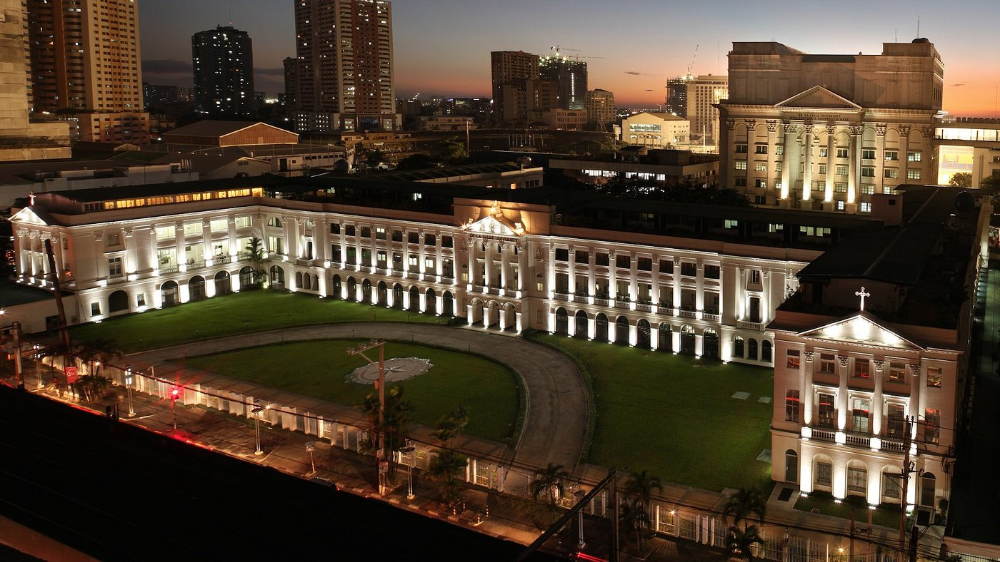

History
Founded in 1911, De La Salle University was established by the Brothers of the Christian Schools (FSC) in Paco, Manila, to offer quality Catholic education rooted in the teachings of St. John Baptist de La Salle. Starting with only 125 students, the school quickly gained a reputation for academic excellence and moral formation. During World War II, the campus suffered heavy damage, but the institution rebuilt and later moved to Taft Avenue, where it continued to grow. Today, De La Salle University stands as one of the Philippines’ leading universities, known for its commitment to faith, scholarship, and service to the nation.
Academics
De La Salle University offers a wide range of programs that promote both academic excellence and personal development. It promotes research, innovation, and well-rounded education to prepare students for their chosen fields. Its colleges in science, business, and engineering are known for producing graduates who excel both locally and internationally. The university also values development, helping students grow into responsible and compassionate individuals. DLSU encourages students to join extracurricular activities such as organizations, sports, and school chants to build teamwork, spirit, and Lasallian pride.
Achievements
De La Salle University has earned recognition as one of the top universities in the Philippines and Asia. It is known for its strong academic performance, research contributions, and community service programs. Many of its graduates have become successful professionals in various fields, reflecting the school’s high standards of education. Beyond academics, DLSU also excels in extracurricular activities. Its athletic teams, the De La Salle Green Archers, have won multiple championships in collegiate sports. The university takes pride in its active student organizations, cultural performances, and projects that highlight Lasallian talent, teamwork, and dedication to faith, service, and excellence.
Courses and Programs Offered
| Program | College | Degree Type |
|---|---|---|
| BS Business Administration Major in Marketing Management | Ramon V. del Rosario College of Business | Regular Program |
| BS Computer Science Major in Software Technology | College of Computer Studies | Regular Program |
| BS Civil Engineering | Gokongwei College of Engineering | Regular Program |
| AB Communication | College of Liberal Arts | Regular Program |
| Juris Doctor (JD) | College of Law | Graduate Program |
DSLU Hymn – "Alma Mater Hymn"
The “Alma Mater Hymn” celebrates the Lasallian values of faith, service, and excellence, and is sung to show pride in being part of the De La Salle community.
Admissions Information
The De La Salle University admissions process selects students with strong academic potential, leadership skills, and commitment to service. Applications open annually, and full details are available on the official DLSU Admissions website.